Simulation with Modelsim
1. Simulation with Modelsim
Normally, Vivado uses xsim as the default simulation tool, but there is also a way to simulate with Modelsim. The steps for simulation with Modelsim are as follows:
1． Compile Xilinx library with Modelsim
2． Create simulation script on Vivado
3． Open Modelsim and run the simulation
4． Edit/Create test_bench based on step ③ and run the simulation
※ Since AXI Verification IP requires a license, an error will occur when simulating with Modelsim （Without a paid Modelsim license, it is not possible to simulate AXI Verification IP）
1.1. Compiling Xilinx Library with Vivado
Open Vivado and click on Tool → Compile Simulation Libraries
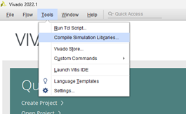
Specify the Compiled library location and Simulator executable path then click 「Compile」
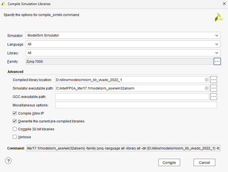
When compilation is complete, a modelsim.ini file will also be created (this is the initialization script to load the Xilinx library when Modelsim opens).
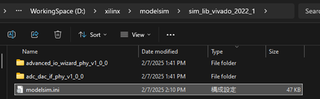
※ 1. Compiling all Xilinx IPs takes a long time (about 1 hour).
※ 2. From testing with Modelsim 10.5b (Quartus 17.1) and Vivado 2022.1, it was found that 4 modules failed to compile. If the design in Vivado does not use those modules, it shouldn't be a problem.
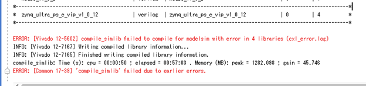
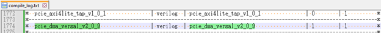
※ 3. Screen in case of specifying the GCC Path
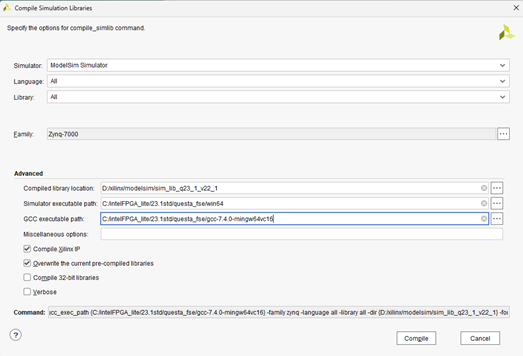
※
4. If there is no AXI BFM license, there will be an error like this
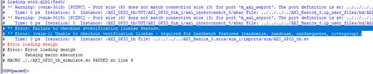
1.2. Simulation with Modelsim (for designs without Xilinx VIP)
1． Export simulation on Vivado
Create a filter named 「sim」 in the project, then click 「Export Simulation」 in Vivado
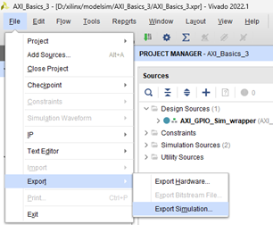
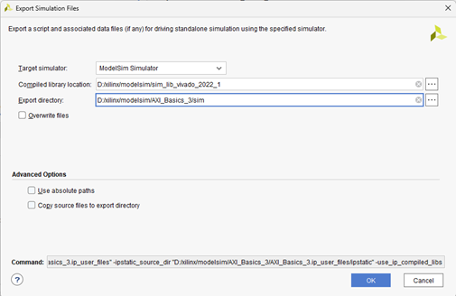
2． Simulation Setup
Under 「sim」
do compile.do
do simulate.do
※ To prevent Modelsim from closing automatically after simulation finishes, add a comment in front of the quit -force command
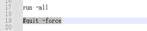
※ If it's a design with Xilinx VIP, an error like the image below will occur and simulation cannot be performed.
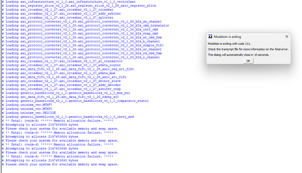
1.3. Running Simulation with UVVM + Modelsim
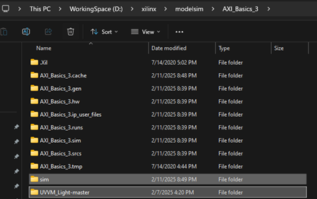
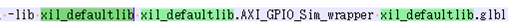
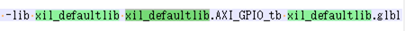
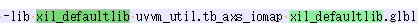
xil_defaultlib uvvm_util.tb_axs_iomap xil_defaultlib.glbl
cd d:/xilinx/modelsim/AXI_Basics_3/UVVM_Light-master/sim/
do ./compile_and_run_demo_tb.do
do ./sim.do
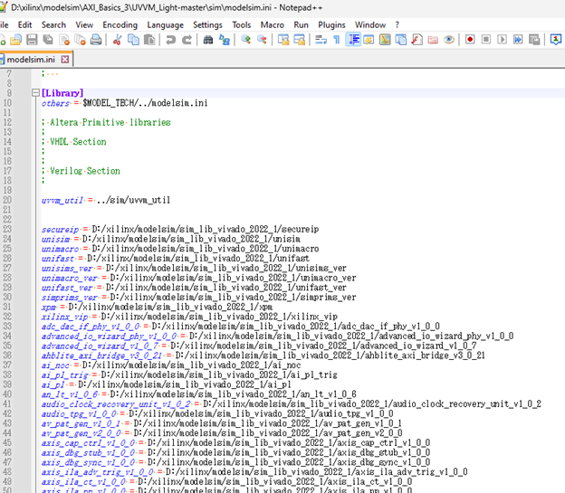
1.4. How to Simulate Designs with Zynq using UVVM + Modelsim
1． Download UVVM source code
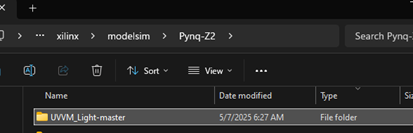
Copy the modelsim.ini file (for loading Xilinx libraries) to UVVM_Light-master\sim
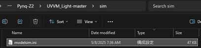
2． Export simulation on Vivado
Create a filter named 「sim」 in the project, then click 「Export Simulation」 in Vivado
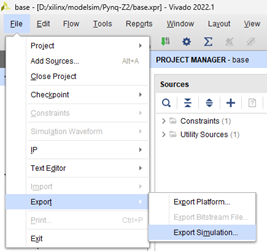
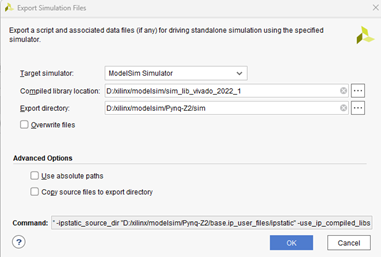
3． Edit the source code
- Pynq-Z2\sim\compile.do
Ø Add vlib modelsim_lib
Ø Remove the include vip section
Ø Remove the compile section of base_ps7_0_0 (we will use the custom built version (with UVVM) instead)
Ø Edit tb_prj_top.v and glbl.v as follows
"../../UVVM_Light-master/tb/tb_prj_top.v"
"../../sim/modelsim/glbl.v"
In the case of simulation with Vivado (Xsim), the tb_prj_top.v file uses Xilinx VIP to control the AXI bus. But this time we will use UVVM for control. Therefore, comment out the entire Xilinx VIP section.
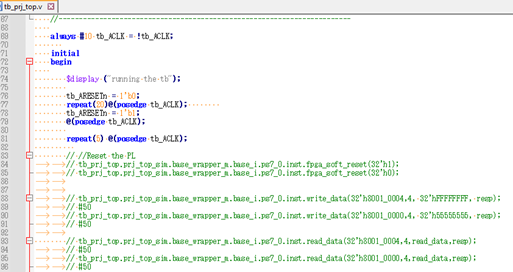
- Pynq-Z2\UVVM_Light-master\sim\ compile_and_run_demo_tb.do
Add the following content
do ../../sim/modelsim/compile.do
vlib uvvm_util
eval vcom $compdirectives -work xil_defaultlib ../tb/base_ps7_0_0.vhd
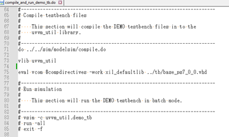
※ In the base_ps7_0_0.vhd file itself, there is logic for UVVM control.
※ Place the base_ps7_0_0.vhd and tb_prj_top.v files in Pynq-Z2\UVVM_Light-master\tb\
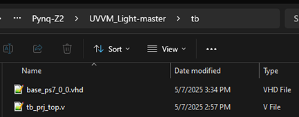
- Create sim.do file in Pynq-Z2\UVVM_Light-master\sim
Copy the vsim command written in Pynq-Z2\sim\simulate.do, then remove the library containing vip, and save to Pynq-Z2\UVVM_Light-master\sim\sim.do
※ If you include the vip library as well,
it will cause an error because we don't have a license.
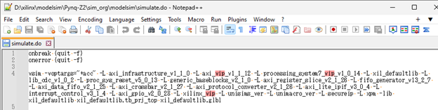
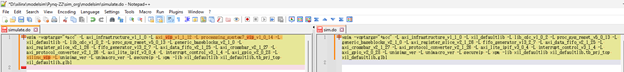
4． Simulation with Modelsim
Open Modelsim
cd d:/xilinx/modelsim/Pynq-Z2/UVVM_Light-master/sim/
do ./compile_and_run_demo_tb.do
do ./sim.do